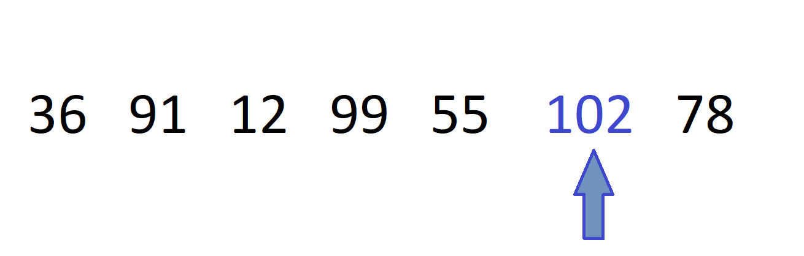

Működése:
Adott egy lista amelyben valamennyi szám található.
A függvény átnézi, majd kiválasztja a legnagyobbat.
Egyessével végigmegy a lista összes elemén és megnézi, hogy nagyobb e
mint az előző.
Példa:
Lista_szamai = [92, 50, 88, 4, 399, 173]
max.Lista_szamai = 399
Előnyei:
Megtudjuk hogy a számok közül melyik a legnagyobb.

Képletei
▬ Helyfoglalás: n+1
▬ Összehasonlítások száma: n(n-1)/2
▬ Mozgatások száma: 0-tól 3*(n-1)/2-ig
▬ Cserék száma: 0-tól n-1-ig